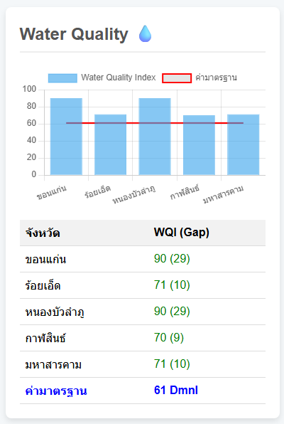

รายงานคุณภาพสิ่งแวดล้อม: คุณภาพน้ำ (WQI)

ภาพที่ 1: ผลคะแนน Water Quality Index (WQI) ของ 5 จังหวัด
บทนำ
รายงานฉบับนี้จัดทำขึ้นเพื่ออภิปรายผลและให้ข้อเสนอแนะสำหรับการจัดการคุณภาพน้ำ แหล่งน้ำผิวดิน ในพื้นที่ 5 จังหวัดได้แก่ ขอนแก่น ร้อยเอ็ด หนองบัวลำภู กาฬสินธ์ และมหาสารคาม โดยใช้ข้อมูลจากผลคะแนน Water Quality Index (WQI) และค่ามาตรฐานที่กำหนดไว้ที่ 61 เป็นเกณฑ์ในการประเมิน
การอภิปรายผล
จากผลการประเมินพบว่าภาพรวมของทุกจังหวัดมีคะแนน WQI สูงกว่าค่ามาตรฐานที่กำหนด โดยสามารถแบ่งกลุ่มการประเมินได้ดังนี้:
- ขอนแก่น และหนองบัวลำภู: ทั้งสองจังหวัดมีคะแนน WQI ที่ 90 ซึ่งจัดอยู่ในเกณฑ์ "ดี" ตามตารางการประเมินคุณภาพน้ำ และมีค่าสูงกว่ามาตรฐาน 29 คะแนน
- ร้อยเอ็ด และมหาสารคาม: ทั้งสองจังหวัดมีคะแนน WQI ที่ 71 ซึ่งอยู่ในเกณฑ์ "ดี" เช่นกัน และมีค่าสูงกว่ามาตรฐาน 10 คะแนน
- กาฬสินธ์: จังหวัดนี้มีคะแนน WQI อยู่ที่ 70 ซึ่งอยู่ในเกณฑ์ "พอใช้" และมีค่าสูงกว่ามาตรฐาน 9 คะแนน ถึงแม้คะแนนจะสูงกว่าค่ามาตรฐาน แต่ก็เป็นจังหวัดที่มีคะแนน WQI ต่ำที่สุดในกลุ่มนี้
ข้อเสนอแนะสำหรับการจัดการคุณภาพน้ำ
แม้ว่าทุกจังหวัดจะมีคุณภาพน้ำอยู่ในเกณฑ์ที่ยอมรับได้ แต่การดำเนินการเชิงรุกเป็นสิ่งสำคัญเพื่อป้องกันไม่ให้คุณภาพน้ำลดลง จึงมีข้อเสนอแนะดังต่อไปนี้:
สำหรับจังหวัดที่มี WQI สูง (ขอนแก่น, หนองบัวลำภู)
- คงไว้ซึ่งมาตรการเชิงรุก: เสริมสร้างความร่วมมือในการรักษาระดับคุณภาพน้ำที่ดีอยู่แล้ว
- ตรวจวัดคุณภาพน้ำอย่างสม่ำเสมอ: เพื่อเฝ้าระวังและป้องกันปัญหามลพิษที่อาจเกิดขึ้นในอนาคต
สำหรับจังหวัดที่คะแนน WQI ค่อนข้างต่ำ (กาฬสินธ์)
- ตรวจสอบแหล่งที่มาของมลพิษ: ค้นหาสาเหตุที่ทำให้คะแนน WQI ต่ำกว่าจังหวัดอื่น ๆ เช่น น้ำเสียจากชุมชนหรือภาคอุตสาหกรรม
- เพิ่มมาตรการในการบำบัดน้ำเสีย: ส่งเสริมการสร้างและใช้งานระบบบำบัดน้ำเสียในพื้นที่สำคัญ
- ส่งเสริมการเกษตรที่เป็นมิตรกับสิ่งแวดล้อม: ลดการใช้ปุ๋ยและยาฆ่าแมลงที่อาจปนเปื้อนลงสู่แหล่งน้ำ
ข้อเสนอแนะสำหรับทุกจังหวัด
- สร้างความตระหนักรู้: จัดกิจกรรมให้ความรู้แก่ประชาชนถึงความสำคัญของการอนุรักษ์แหล่งน้ำและการจัดการขยะอย่างถูกวิธี
- ส่งเสริมการมีส่วนร่วมของชุมชน: ชุมชนมีบทบาทสำคัญในการเฝ้าระวังและดูแลแหล่งน้ำในท้องถิ่น